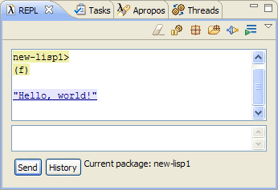

Creating Lisp Project
Start Eclipse.
Go to Window > Open Perspective > Other...
Choose Lisp. You'll need to wait while Cusp starts and connects to lisp process. The first time Cusp starts it compiles code that connects to Lisp, and it might take couple minutes on slow machines, so be patient. Next time you'll start Cusp, it will load Lisp and connect to it much quicker.
Start new project: File > New > Lisp Project

In New Lisp Project dialog box don't change anything and just hit Finish.

Project wizard will create three files: new-lisp1.asd, main.lisp, defpackage.lisp
- new-lisp1.asd - it is a sort of make file for your program, we'll look at it later
- defpackage.lisp - it is a sort of header file, here you declare functions and other symbols that are exported from the package
- main.lisp - this file will hold your code
Once project is created it will be automatically compiled and loaded. We'll discuss later what this mean.
Writing Code and Basic Navigation
Open file main.lisp and after (in-package :new-lisp1) write the following code: (defun f () "hello, world!")
Save the file. As file is saved your new code is immidiately compiled. You can check this by typing in lower part of REPL (new-lisp1::f) and hitting Enter key or pressing Send button:

The result is displayed in upper part of REPL:

To export the function f from the package new-lisp1 do the following (these operations are overkill for such a short source code, but they show important navigation features of Cusp IDE):Select in-package :new-lisp1 in outline window to jump to the location of this statement in the code.

Ctrl+Click on :new-lisp1 to find location where this symbol is defined.

This operation brings up dialog box Definitions. Select (DEFPACKAGE :NEW-LISP1) and hit OK:

The previous operation will bring up the file defpackage.lisp. Type f in :export and save file:
Now the function f is exported from the package new-lisp1 which can be checked by typing (new-lisp1:f) in REPL (note single : instead of double :: in previous test, which signifies the fact that we just called a symbol exported from the package).
To get back to the definition of function f just type Alt-BackArrow Alt-BackArrow or use navigation buttons on main toolbar:
Quitting And Restarting
Once you tired of coding you will want to close Eclipse. Go ahead and just close it, you don't need to do anything special to your Lisp session.
To get back to your code you open Eclipse, then make sure that you are in Lisp Perspective, if not select it. Before you can continue coding your program, you need to load it. To do this, right click on .asd file in your project and select Load asd :

This will compile and load all files for your package. You can check this by running new-lisp1:f
Back to table of contents